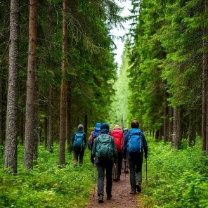

Увидеть настоящую Карелию
Карелия — это край суровой северной красоты, древних скал и бескрайних лесов. Мы организуем авторские туры по этому удивительному региону уже более семи лет. За это время мы прошли сотни километров троп и разработали маршруты на любой вкус: от однодневных экскурсий на остров Кижи и прогулок по мраморному каньону Рускеала до многодневных сплавов по порожистой реке Шуя и спокойных выездов на Ладожские шхеры.
Туры от местных экспертов

Мы гордимся тем, что наши группы небольшие — до 12 человек. Именно такой формат позволяет уделить внимание каждому участнику, создать по-настоящему уютную и дружескую атмосферу, а также избежать суеты больших туристических групп. С вами будут работать не просто гиды, а сертифицированные местные проводники, которые досконально знают родной край, его историю и потаённые уголки, скрытые от обычных туристов. Наша главная задача — сделать вашу поездку комфортной, абсолютно безопасной и по-настоящему запоминающейся.